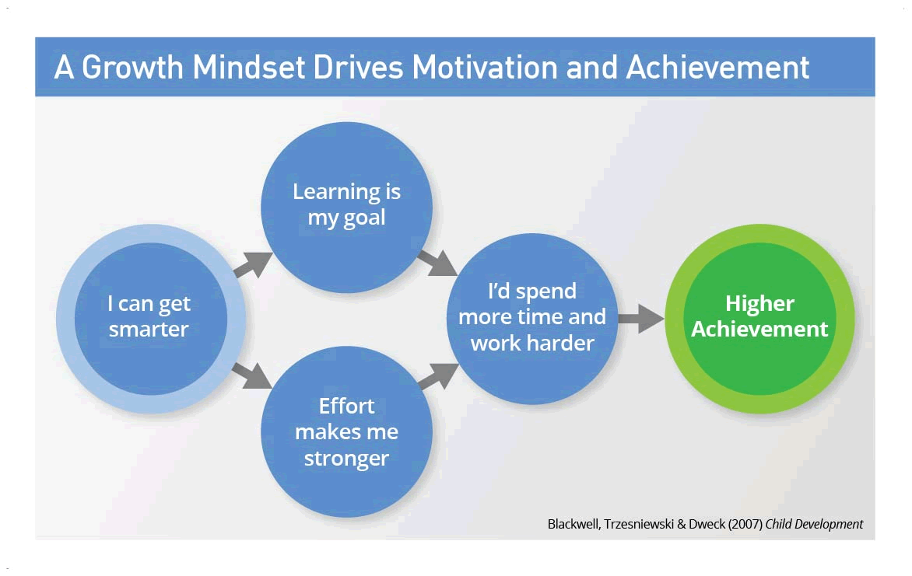
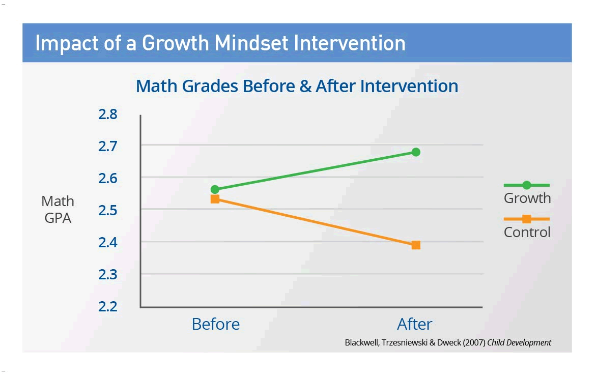

Neuroplasticity and Growth Mindset
16 July 2022Neuroplasticity
Neuroplasticity refers to the brain's ability to change through exposure to life's experiences. The word "plasticity" itself is used in medicine as the ability of any structure weak enough to change by an external stimulus, however strong enough not to mould at a once. Neuroplasticity or brain plasticity is defined as the ability of the nervous system to change its activity in response to intrinsic or extrinsic stimuli by reorganizing its structure, functions, or connections.
It was once believed that the brain stops growing or changing when someone hits adulthood. Modern science has shown that this wiring and rewiring of the brain never cease. And this can be for the good and for the bad.
I first heard of the term of Neuroplasticity at a rehab treatment center for addiction. There, they gave the analogy that neural pathways are like downhill ski paths. At first, the path is not there. And then the more you use the tracks, the path becomes more packed, solidified, and you can travel on it faster. In fact, some paths would become so slippery you couldn't help go down that path even when it would lead you to hit the tree. But the good news for addicts was if you stop using the path, overtime, new ice will cover the tracks and us addicts can form new nicer and gentler ski paths.Good and positive thoughts, experiences, learnings, behaviors and habits lead to good outcomes for the brain. And simultaneously, the opposite leads to the bad outcomes for the brain.
Research has shown, our brain's capacity to rewire itself is actually very high. Neuroplasticity is incredibly important because it is at the root of essential human experiences. Learning and memory, key parts of what it means to be human, would not be possible without this process. Understanding this benefits people because it is a reminder of our innate capacity for change. We are not convicted and defined by our past and we have the ability to grow into the person we would like to see.
Personally, my understanding of this concept has helped me assess and reflect on my past actions, behaviours and thinking patterns. I took the time to examine the cause, conditions and outcomes of my past so I can identify which patterns of behaviours and thinking no longer serve me and need to be replaced with new way of thinking and behaving. It also helps me to nurture my curiosity and drive for growth. It has helped me with having a growth mindset like my decision to attend this coding bootcamp.
Some ways to increase your neuroplasticity:
- Help your brain stay healthy through rest, clean food, and exercise
- Meditation/prayers and reflections
- Practicing mindfulness
- Keeping an open mind and a growth mindset
- Learn something new and push yourself through it
- Play strategy games
- Brain supplements
- Learn to juggle and exercise different parts of your brain
- Expand your vocabulary to broaden your horizon
Watch a quick video on neuroplasticity:
Growth Mindset
Someone with a growth mindset views intelligence, abilities, and talents as learnable and capable of improvement through effort. On the other hand, someone with a fixed mindset views those same traits as inherently stable and unchangeable over time.
Someone with a growth mindset views intelligence, abilities, and talents as learnable and capable of improvement through effort. On the other hand, someone with a fixed mindset views those same traits as inherently stable and unchangeable over time.
Growth mindset is incredibly relevant because it allows a person to get unstuck from past beliefs, thinking patterns, convictions, mental models and situations that are no longer serving their future. This mindset allows people to think and build for the future because they know everyone has the capacity to learn new skills and thinking patterns to grow.

In this exploration, it was fascinating to learn that Carol Dweck discovered that children's academic performance can improve simply by being introduced to the idea of the growth mindset; that their current abilities are not fixed and that they can always improve. This leads to better goal setting and more efforts.

I have been aware of these two concepts for some time and have incorporated them into my learning plan. However, this exploration has given me the reminder that I need to be more aware and to give more effort in sustaining my brain and body's good health and energy. I can do that through:
- Better planning of my time
- Getting sufficient sleep
- Improving my diet with more clean food
- Taking the time to exercise
Watch Caroline Dweck Stanford talk on Growth mindset:
Sources
- 9 neuroplasticity exercises to boost productivity
- What is Neuronal Plasticity and Why Is It Important?
- Brain may be far more flexible than thought
- Train your brain
- What Is Neuroplasticity?
- What Having a “Growth Mindset” Actually Means
- Growth mindset vs. fixed mindset: what's the difference?
- Dr. Dweck’s research into growth mindset changed education forever